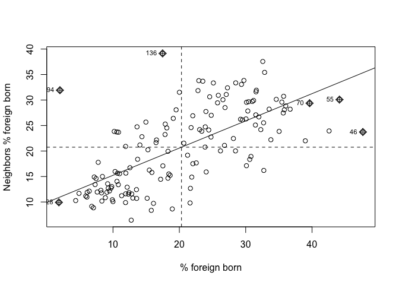

Lab 6: Exploratory Spatial Data Analysis
CRD 150 - Quantitative Methods in Community Research
Professor Noli Brazil
February 15th, 2023
In this guide you will learn how to conduct an exploratory spatial data analysis (ESDA). Specifically, you will learn how to examine and quantify spatial clustering (autocorrelation). You will also gain skills in spatial data wrangling. The objectives of the guide are as follows
- Learn how to keep tracts that are within city boundaries
- Learn how to create a spatial weights matrix
- Calculate spatial autocorrelation
To achieve these objectives, you will be working with tract-level data on the foreign-born population in Sacramento. This lab guide follows closely and supplements the material presented in Chapters 4.1 and 4.2 in the textbook Geocomputation with R (GWR) and Handout 6.
Assignment 6 is due by 2:00 pm, February 22nd on Canvas. See here for assignment guidelines. You must submit an .Rmd file and its associated .html file. Name the files: yourLastName_firstInitial_asgn06. For example: brazil_n_asgn06.
Open up an R Markdown file
Download the Lab template into an appropriate folder on your hard drive (preferably, a folder named ‘Lab 6’), open it in R Studio, and type and run your code there. The template is also located on Canvas under Files. Change the title (“Lab 6”) and insert your name and date. Don’t change anything else inside the YAML (the stuff at the top in between the ---). Also keep the grey chunk after the YAML. For a rundown on the use of R Markdown, see the assignment guidelines
Installing and loading packages
You’ll need to install the following packages in R. You only need to do this once, so if you’ve already installed these packages, skip the code. Also, don’t put these install.packages() in your R Markdown document. Copy and paste the code in the R Console. We’ll talk about what these packages provide as their relevant functions come up in the guide.
install.packages("rmapshaper")
install.packages("spdep")You’ll need to load the following packages. Unlike installing, you will always need to load packages whenever you start a new R session. You’ll also always need to use library() in your R Markdown file.
library(tidyverse)
library(tidycensus)
library(sf)
library(tigris)
library(tmap)
library(rmapshaper)
library(spdep)Bringing spatial data into R
We will be working with census tract data on the foreign-born population in Sacramento city. The following code is very similar to the code in Lab 5, so we won’t dwell on the specifics. We first need to get foreign-born population data for California census tracts from the 2016-2020 American Community Survey. Let’s use our best friends the Census API and the function get_acs(). Remember that “E” at the end of the variable indicates “Estimate” and “M” indicates margins of errors.
ca.tracts <- get_acs(geography = "tract",
year = 2020,
variables = c(fb = "B05012_003", totp = "B05012_001"),
state = "CA",
survey = "acs5",
output = "wide",
geometry = TRUE) %>%
mutate(pfb = fbE/totpE) %>%
rename(totp = totpE) %>%
select(GEOID, totp, pfb)Next, let’s bring in the Sacramento City boundary using places() from the tigris package, which we first learned about in Lab 3. Remember, since we brought in 2016-2020 ACS data above, you need to specify year = 2020 in the places() function.
pl <- places(state = "CA", cb = TRUE, year=2020)
sac.city <- filter(pl, NAME == "Sacramento")Spatial data wrangling
The goal in this lab is to conduct exploratory spatial data analysis to examine how spatially clustered the foreign born population is in Sacramento City. Before we can do this, we need to keep the tracts from ca.tracts that are in Sacramento City sac.city. Easier said than done. Looking at the variables in the data frame ca.tracts, we find that there is no variable that indicates whether the tract belongs to Sacramento city. This includes the GEOID, which only provides state and county census IDs. While there is a county = argument in get_acs(), there is no place = argument. In order to extract the Sacramento tracts, we need to do some data wrangling. However, not just any old data wrangling, but spatial data wrangling. Cue dangerous sounding music.
Well, it’s not that dangerous or scary. Spatial Data Wrangling involves cleaning or altering your data set based on the geographic location of features. A common spatial data wrangling task is to subset a set of spatial objects based on their location relative to another spatial object. In our case, we want to keep California tracts that are in Sacramento city. Think of what were doing here as something similar to taking a cookie cutter shaped like the Sacramento city (in our case, the sf object sac.city) and cutting out the city from our cookie dough of census tracts (ca.tracts).
Recall from Handout 3 that census tracts neatly fall within a county’s boundary (remember the census geography hierarchy diagram from Handout 3). In other words, tracts don’t spill over. But, it does spill over for cities. The left diagram in the Figure below is an example of a county in red and four tracts in black - all the tracts fall neatly into the county boundary. In contrast, the right diagram is an example of a city on top of four tracts - one tract falls neatly inside (top left), but the other three spill out.

Tracts falling in (County) and out (City) of boundaries
One way of dealing with this is to keep or clip the portion of the tract that is inside the boundary. Clipping will keep just the portion of the tract inside the city boundary and discards the rest of the tract. We use the function ms_clip() which is in the rmapshaper package. In the code below, target = ca.tracts tells R to cut out ca.tracts using the sac.city boundaries.
sac.city.tracts <- ms_clip(target = ca.tracts, clip = sac.city, remove_slivers = TRUE)Map the clipped tracts and the city boundaries.
tm_shape(sac.city.tracts) +
tm_polygons(col = "blue") +
tm_shape(sac.city) +
tm_borders(col = "red")
Now, the city is filled in with tracts. The argument target = specifies the dough and clip = specifies the cookie cutter. To be clear what a clip is doing, the Figure below shows a clip of the city example shown in the first Figure above. With a clip, one tract is not clipped because it falls completely within the city (the top left tract). But, the other three are clipped - the portions that are within the boundary are kept (in blue), and the rest (with hash marks) are discarded from the map.
Because spatial data are not always precise, when you clip you’ll sometimes get unwanted sliver polygons. The argument remove_slivers = TRUE removes these slivers.

Clipping tracts
The number of tracts in the City of Sacramento is
nrow(sac.city.tracts)## [1] 149Exploratory Spatial Data Analysis
Our goal is to determine whether the foreign-born population in Sacramento City is geographically clustered. We can explore clustering by examining maps and scatterplots. We can also formally test for clustering or spatial autocorrelation by calculating the Moran’s I, which is covered in Handout 6.
Exploratory mapping
Before calculating spatial autocorrelation, you should map your variable to see if it looks like it clusters across space. Using the function tm_shape(), which we learned about in Lab 5, and the mapping principles we learned in last week’s lecture, let’s make a nice map showing the proportion (or percent) foreign-born in Sacramento city using quantile breaks.
tm_shape(sac.city.tracts, unit = "mi") +
tm_polygons(col = "pfb", style = "quantile",palette = "Reds",
border.alpha = 0, title = "") +
tm_scale_bar(breaks = c(0, 1, 2), text.size = 1, position = c("left", "bottom")) +
tm_layout(main.title = "Proportion foreign-born in Sacramento City tracts",
main.title.size = 0.95, frame = FALSE,
legend.outside = TRUE)
It does look like the foreign-born population clusters. In particular, there appears to be high concentrations of foreign-born residents in the South and North areas of the city.
Spatial weights matrix
Before we can formally model the spatial dependency shown in the above map, we must first cover how neighborhoods are spatially connected to one another. That is, what does “near” mean when we say “near things are more related than distant things”? You need to define
- Neighbor connectivity (who is you neighbor?)
- Neighbor weights (how much does your neighbor matter?)
We go through each of these steps below.
Neighbor connectivity
A common way of defining neighbors is to see who shares a border. The two most common ways of defining contiguity is Rook and Queen adjacency (Figure below). Rook adjacency refers to neighbors that share a line segment. Queen adjacency refers to neighbors that share a line segment (or border) or a point (or vertex).

Geographic contiguity
Neighbor relationships in R are represented by neighbor nb objects. An nb object identifies the neighbors for each feature in the dataset. We use the command poly2nb() from the spdep package to create a contiguity-based neighbor object.
Let’s specify Queen connectivity.
sacb<-poly2nb(sac.city.tracts, queen=T)You plug the object sac.city.tracts into the first argument of poly2nb() and then specify Queen contiguity using the argument queen=T. To get Rook adjacency, change the argument to queen=F.
The function summary() tells us something about the neighborhood.
summary(sacb)The average number of neighbors (i.e. adjacent tracts) is 5.68s, 1 tract has a low of 1 neighbor and 1 has a high of 12 neighbors.
Neighbor weights
We’ve established who our neighbors are by creating an nb object using poly2nb(). The next step is to assign weights to each neighbor relationship. The weight determines how much each neighbor counts. You will need to employ the nb2listw() command from the spdep package, which will you give you a spatial weights object.
sacw<-nb2listw(sacb, style="W", zero.policy = TRUE)In the command, you first put in your neighbor nb object (sacb) and then define the weights style = "W". Here, style = "W" indicates that the weights for each spatial unit are standardized to sum to 1 (this is known as row standardization - see Handout 6). For example, if census tract 1 has 3 neighbors, each of the neighbors will have a weight of 1/3. This allows for comparability between areas with different numbers of neighbors.
The zero.policy = TRUE argument tells R to ignore cases that have no neighbors. How can this occur? The Figure below provides an example. It shows tracts in Los Angeles county. You’ll notice two tracts that are not geographically adjacent to other tracts - they are literally islands (Catalina and San Clemente). So, if you specify queen adjacency, these islands would have no neighbors. If you conduct a spatial analysis of Los Angeles county tracts in R, most functions will spit out an error indicating that you have polygons with no neighbors. To avoid that, specify zero.policy = TRUE, which will ignore all cases without neighbors.

Los Angeles county tracts with islands
Moran Scatterplot
We’ve now defined what we mean by neighbor by creating an nb object using poly2nb() and the influence of each neighbor by creating a spatial weights matrix using nb2listw(). The map of percent foreign born showed that neighborhood percent foreign born appears to be clustered in Sacramento. We can visually explore this more by creating a scatterplot of percent foreign-born on the x-axis and the average percent foreign born of one’s neighbors (also known as the spatial lag) on the y-axis. We’ve already covered scatterplots in Handout 4. The scatterplot described here is just a special type of scatterplot known as a Moran scatterplot.
You can create a Moran scatterplot using the function moran.plot() from the spdep package.
moran.plot(sac.city.tracts$pfb, sacw,
xlab = "% foreign born",
ylab = "Neighbors % foreign born")
The first argument is the variable you want to calculate spatial autocorrelation for. The function moran.plot() is not tidy friendly, so we refer to the percent foreign born variable with a dollar sign $, which we learned about in Lab 1. sac.city.tracts$pfb will give you the percent foreign born as a vector.
sac.city.tracts$pfbThe second argument is the spatial weights matrix that defines neighbor and interaction. The xlab and ylab arguments provide clean labels for the x and y axes.
The x-axis is a tract’s percent foreign born and the y-axis is the average percent foreign born of that tract’s neighbors. There is evidence of strong positive association - the higher your neighbors’ percent foreign born, the higher your own neighborhood’s percent foreign born. As we discussed in lecture, you can separate the plot into four quadrants based on positive and negative spatial autocorrelation.
Moran’s I
The map and Moran scatterplot provide descriptive visualizations of spatial clustering (autocorrelation) in the percent foreign born. But, rather than eyeballing the correlation, we need a quantitative and objective approach to measuring the degree to which places cluster. This is where measures of spatial autocorrelation step in. An index of spatial autocorrelation provides a summary over the entire study area of the level of spatial similarity observed among neighboring observations.
The most popular test of spatial autocorrelation is the Moran’s I test. Use the command moran.test() in the spdep package to calculate the Moran’s I.
moran.test(sac.city.tracts$pfb, sacw) ##
## Moran I test under randomisation
##
## data: sac.city.tracts$pfb
## weights: sacw
##
## Moran I statistic standard deviate = 10.066, p-value < 2.2e-16
## alternative hypothesis: greater
## sample estimates:
## Moran I statistic Expectation Variance
## 0.496907919 -0.006756757 0.002503483We find that the Moran’s I is positive (0.49) and statistically significant (p-value < 0.05). Remember from lecture that the Moran’s I is simply a correlation, and we learned from Handout 3 that correlations go from -1 to 1. A 0.49 correlation is fairly high (meeting the rule of thumb of 0.30 described in Handout 6), indicating strong positive clustering. Moreover, we find that this correlation is statistically significant (p-value basically at 0).
Based on the following evidence
- A map of percent foreign born visually indicating geographic clustering
- The Moran scatterplot indicating a visual correlation between a neighborhood’s percent foreign born and its neighbors’ average percent foreign born
- A Moran’s I value that is
- Greater than 0.3
- Statistically significant from 0 with a p-value less than 0.05
we can conclude that the foreign-born population in Sacramento city exhibits positive spatial autocorrelation, or, is geographically clustered.
Assignment 6
Download and open the Assignment 6 R Markdown Script. The script can also be found on Canvas (Files - Week 6 - Assignment). Any response requiring a data analysis task must be supported by code you generate to produce your result. Just examining your various objects in the “Environment” section of R Studio is insufficient—you must use scripted commands. Submit the Rmd and its knitted html files on Canvas.
- Housing eviction has received significant public attention especially in the City of Oakland. Let’s examine the geographic clustering of housing eviction rates in the City of Oakland.
- Use the Census API to bring in median household income (ID: B19013_001) from the 5-year 2015-19 American Community Survey for census tracts in California. Make sure to bring it in as a spatial object by setting
geometry = TRUE. (1 point) - For the object you created in (a), keep census tracts that are located in the City of Oakland. (2 points)
- Download the file oakevict.csv from Canvas (Files - Week 6 - Assignment). The file contains 2019 housing eviction rates for census tracts in Oakland. Read this file into R and merge it into the object you created in (b). (1 point)
- Calculate the correlation between median household income and eviction rates. (1 point)
- Create a presentation-ready map of housing eviction rates using quantile breaks. (1 point)
- Construct a Moran scatterplot of housing eviction rates. Use queen contiguity and row-standardized weights. (2 points)
- Calculate the Moran’s I for housing eviction rates. (1 point)
- Explain in your own words the conceptual difference between the correlation you calculated in 1d and the correlation you calculated in 1g. (2 points)
- Are housing eviction rates geographically clustered based on your analysis in (e)-(g)? Explain why or why not. (2 points)
- This article claims that Houston is the most racially integrated city in the United States. We’ll examine this claim by calculating the spatial clustering of race/ethnic groups using the Moran’s I for Houston metropolitan area data. Bring in the shapefile houstondems.zip into R. This file contains data for census tracts in the Houston metropolitan areas. The file is located on Canvas (Files - Week 6 - Assignment). Save the file in an appropriate folder and unzip it to extract the shapefiles. The record layout for the file can be found here. Consider the file to be clean and ready for analysis.
- Read the file houstondems.shp into R. Create presentation-ready maps of percent non-Hispanic black, non-Hispanic white, non-Hispanic Asian, and Hispanic in the Houston metropolitan area using quantile breaks. (2 points)
- Calculate Moran’s I for percent non-Hispanic black, non-Hispanic white, non-Hispanic Asian, and Hispanic in Houston. Use queen contiguity and row-standardized weights. (3 points)
- Summarize in your own words which race/ethnic groups are geographically clustered in Houston based on your answers in (b). (2 points)

This work is licensed under a Creative Commons Attribution-NonCommercial 4.0 International License.
Website created and maintained by Noli Brazil